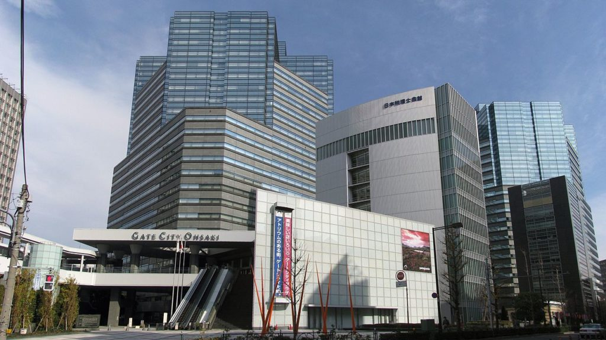
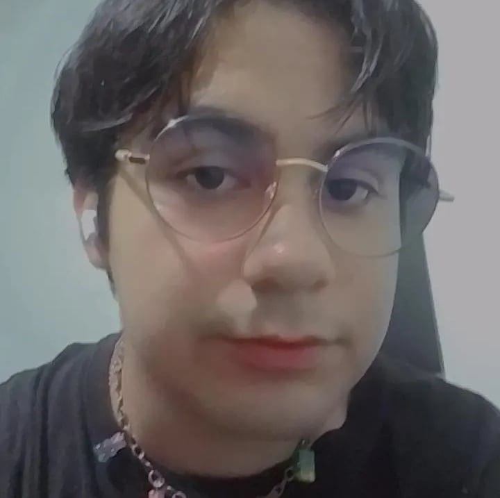
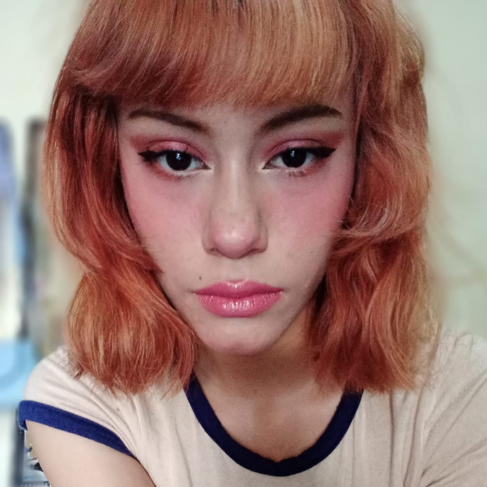
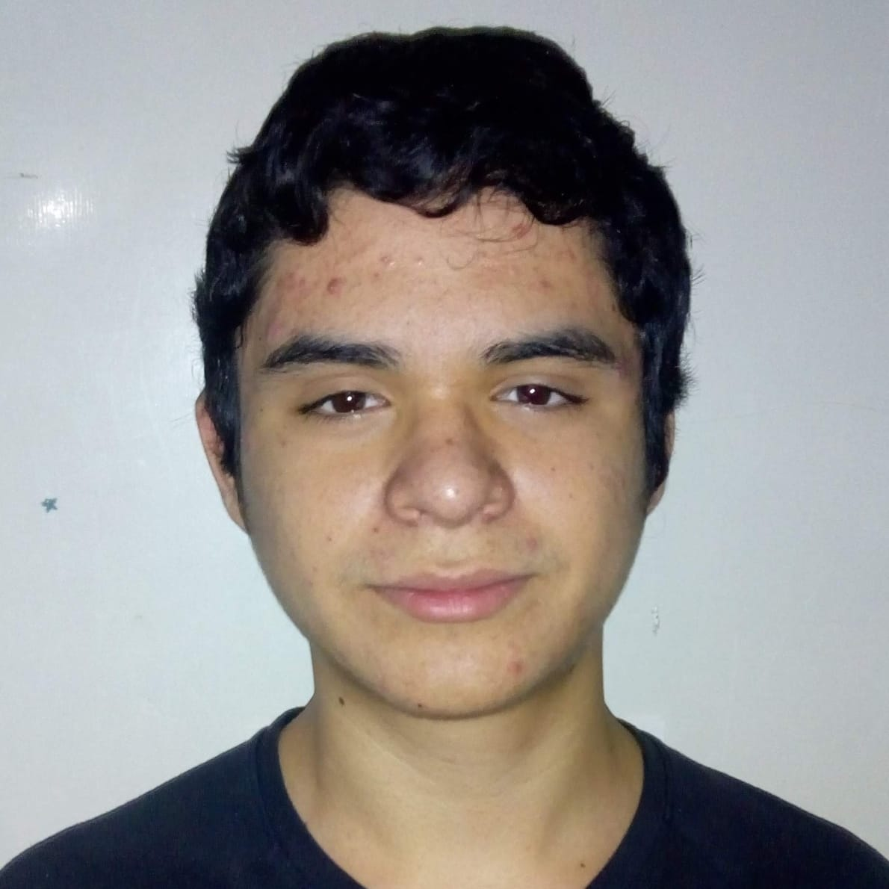
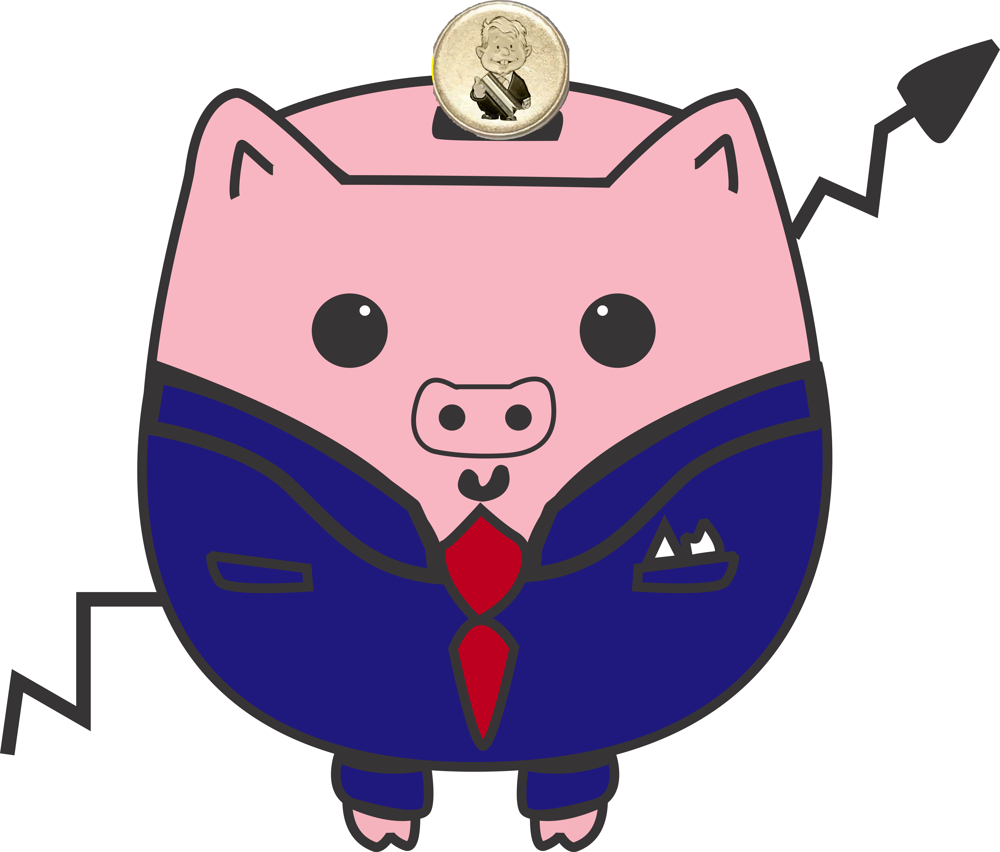

EMPRESA
FADIN SANRIO
"Todos quieren ser felices. Es un deseo humano fundamental. Pero, ¿qué es la verdadera felicidad? Nadie puede vivir en aislamiento. Solo podemos sobrevivir con el apoyo de otros, incluyendo a nuestros padres, hijos, hermanos, cónyuges, amigos y seres queridos, así como colegas en la escuela, el trabajo y en todo el mundo. ¿No es acaso la verdadera felicidad creer en y vivir en armonía con aquellos con quienes compartimos nuestra vida? Para entender y llevarse bien con las personas con las que compartimos nuestra vida, es importante confiar, respetar y amarnos mutuamente. Comunicar estos sentimientos es la filosofía que guía a Sanrio."
Me gustaría expresarte mi sincero agradecimiento por tu continuo apoyo a Sanrio y a nuestros personajes a lo largo de los años. El nombre de la empresa, Sanrio, proviene de las palabras españolas San Río, que literalmente significan "Río Santo" en inglés. San significa "Santo", al igual que en los nombres de lugares como San Francisco y San Diego, y Río significa "River", como en los nombres de ciudades junto al río, como Río de Janeiro y Río Grande. Entonces, el nombre Sanrio significa literalmente "Río Santo" o río sagrado.
¿QUE HACEMOS?
Planificación y venta de regalos de comunicación social
Planificación y venta de tarjetas de felicitación
Planificación y venta de libros
Operación de restaurantes
Producción, promoción y distribución de películas
Producción y venta de videos y DVDs
Planificación y presentación de musicales y actuaciones en vivo
Licencias de derechos de autor
Planificación y operación de parques temáticos
Planificación, desarrollo y venta de servicios y materiales educativos
Planificación, venta y distribución de contenido digital
Actividades relacionadas con publicidad y marketing
CONOCE A NUESTRO EQUIPO
Ulises Hernandez
Programador principal
Jefe de equipo

Oscar Rivera
All hands person
Diseñador

Melina Gonzalez
Diseñadora principal

Arturo Gonzalez
Desarrollador de software
Sanrio® es una marca de estilo de vida global más conocida por su personaje Hello Kitty®, que fue creado en 1974 y es titular de muchas otras marcas de personajes queridos, como My Melody™, Kuromi™, LittleTwinStars™, Cinnamoroll™, Pompompurin™, Gudetama™, Aggretsuko™, Chococat™, Badtz-Maru™ y Keroppi™. Sanrio fue fundada con la filosofía de que un pequeño regalo puede traer felicidad y amistad a personas de todas las edades. Desde la década de 1960, esta filosofía ha servido de inspiración para ofrecer productos, servicios y actividades que fomentan la comunicación e inspiran experiencias únicas a los consumidores en todo el mundo. Hoy en día, los negocios de Sanrio se expanden a la industria del entretenimiento con diversas series de contenido, juegos y parques temáticos.
Los Méritos de usar personajes de Sanrio
Destacarse
Como el rostro de la comunicación, los personajes de Sanrio distinguen a tu empresa del resto.
Llamar la atención
Atraer la atención de posibles clientes. Los inconfundibles rostros de los personajes de Sanrio seguramente captarán la atención.
Afinidad/Familiaridad
Inspirar sentimientos de intimidad, familiaridad y comodidad con tus productos y publicidad.
Internacionalidad
Utilizar una forma de comunicación que trasciende las fronteras nacionales y las culturas.
PREGUNTAS
Company
Misión y Valores
Sobre Sanrio®
Equipo de Trabajo
Estadísticas
Cosas Temáticas
Experiencias
Careers
Personajes Sanrio
El primer personaje Coro-Chan
Personajes relevantes
Personajes
equipo de trabajo
Equipo
contactos
Mas acerca de
Preguntas
Terminos y condiciones
Politicas de privacidad
Empresa
 FADIN